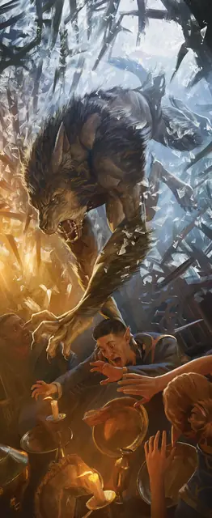

Верволк
Werewolf
Среднее или Маленькое Чудовище (Ликантроп), Хаотичное Злое

Класс Защиты 15 Инициатива +4 (14)
Хиты 71 (11к8 + 22)
Скорость 30 футов (40 фт. в облике волка)
| мод | спас | ||
|---|---|---|---|
| СИЛ | 16 | +3 | +3 |
| ЛОВ | 14 | +2 | +2 |
| ТЕЛ | 14 | +2 | +2 |
| мод | спас | ||
|---|---|---|---|
| ИНТ | 10 | +0 | +0 |
| МДР | 11 | +0 | +0 |
| ХАР | 10 | +0 | +0 |
Чувства Тёмное зрение 60 футов, пассивное Восприятие 14
Языки Общий (не может говорить в облике волка)
Опасность 3 (700 опыта; БВ +2)
Особенности
Тактика стаи. Верволк совершает с Преимуществом броски атаки по существам, если его союзник, не имеющий состояния Недееспособный, находится в пределах 5 футов от цели.
Действия
Мультиатака. Верволк совершает две атаки Царапанием или Длинным луком в любой комбинации. Он может заменить одну атаку Укусом.
Укус (только облик волка или гибридный облик). Бросок рукопашной атаки: +5, досягаемость 5 фт. Попадание: 12 (2к8 + 3) Колющего урона. Если цель — Гуманоид, то на неё действует следующий эффект. Спасбросок Телосложения: Сл 12. Провал: Цель проклята. Если Хиты цели под действием этого проклятия опускаются до 0, вместо этого она становится Верволком под управлением Мастера с 10 Хитами. Успех: Цель получает Иммунитет к проклятию верволка на 24 часа.
Царапание. Бросок рукопашной атаки: +5, досягаемость 5 фт. Попадание: 10 (2к6 + 3) Рубящего урона.
Длинный лук (только облик гуманоида или гибридный облик). Бросок дальнобойной атаки: +4, дистанция 150/600 фт. Попадание: 11 (2к8 + 2) Колющего урона.
Бонусные действия
Перевоплощение. Верволк перевоплощается в гибрид волка и гуманоида Большого размера или в облик Среднего размера волка, или возвращается в свою истинную форму гуманоида. Статистика верволка, за исключением размера, остаётся одинаковой во всех обликах. Любое снаряжение, которое он носит или несёт, не трансформируется.
Бонус мастерства +2
Среда обитания Леса, Холмы
Сокровища Любые
Верволк
Преображённый яростью волка
Верволки способны принять облик неистового волка или гибрида гуманоида и волка. Хотя они могут перевоплощаться по собственной воле, многие не в силах сдержать своё превращение в ночь полнолуния.